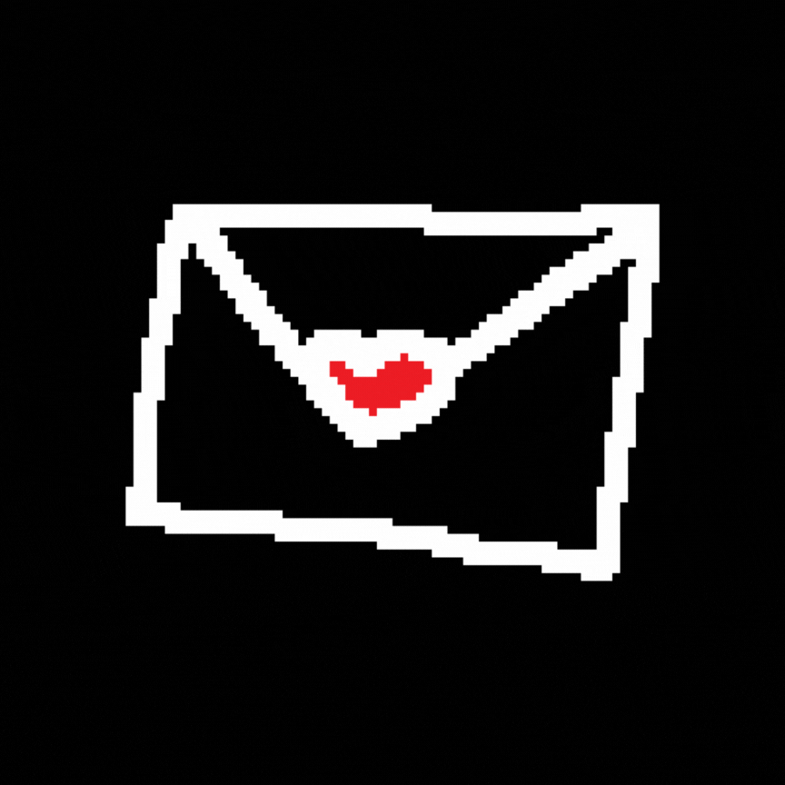

Minha Querida Yasmin, Desde o dia que você apareceu na minha vida, tudo pareceu mais leve e mais colorido. Eu sei que a gente não namora a muito tempo, mas o meu coração não entende calendário, porque eu sinto que você é a pessoa mais especial que já apareceu na minha vida. Você tem um jeito tão único de sorrir, de falar, você faz todos os meus dias sem graça virarem os melhores dias do mundo. Cada conversa que eu tenho com você me deixa com um sorriso bobo. Você me faz querer ser melhor, me faz sonhar acordada e, principalmente, faz eu sentir uma felicidade que eu nem sabia que cabia no meu peito. Obrigada por existir e cruzar meu caminho. Mesmo que a gente esteja no começo do relacionamento, eu tenho certeza que você é a coisa mais bonita que já me aconteceu. Eu não conseguia me expressar por mensagens comuns, então eu fiz uma cartinha virtual bem gayzinha pra demonstra meu amor! Com carinho, Yoko.